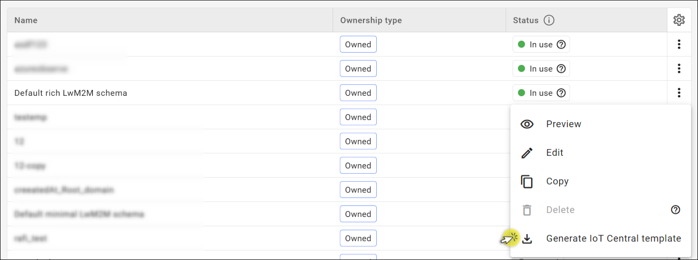
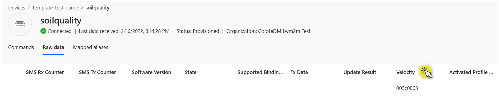
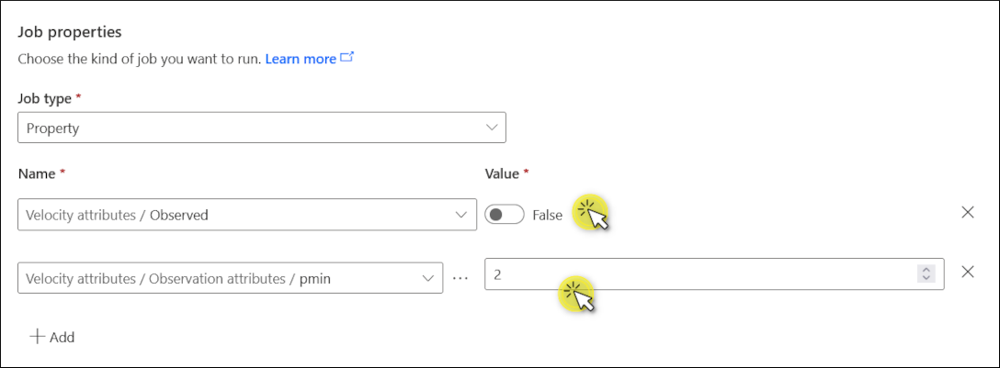

Set an Observation#
This section describes how to set an Observation in your Azure IoT Central application.
Setting an Observation lets your devices know what value changes and for what particular resources they need to notify you about. An Observation can be set for any or all the components of the data model: objects, objects instances, and resources. Whenever there is a change in values, a device will send a Notify message to Coiote DM, which in turn will transfer it to Azure IoT Central.
In this section, you learn how to:
- Assign a device template that acts as a translator between Coiote DM and Azure IoT Central.
- Create a device group in Azure IoT Central, because an Observation is set at the group level.
- Run Jobs to add, edit or delete Observations.
- See value changes for the observed resources.
Prerequisites#
- An active Azure IoT Central with hub owner access permissions.
- A Coiote DM user account with permissions to use the Azure IoT Central integration.
- A device group created in Coiote DM.
- A configured integration between Coiote DM and Azure Iot Central.
- A configured integration template in Coiote DM, assigned to the device group.
- A connected device in Coiote DM that has been exported to or imported from Azure IoT Central.
Assign a device template#
To enable correct communication between Coiote DM and Azure IoT Central, you need two templates. The first template configures the Coiote DM integration with Azure. (Follow the instruction to learn how to configure it.) The second template builds on the first one and allows to provide information that is used only in Azure IoT Central. For example: a given resource is temperature and is measured in Celsius.
Download LwM2M template in Coiote DM#
- In Coiote DM, go to Administration → Hyperscaler Integration Center and select the Templates tab.
-
In the list of templates, find the one from which you want to generate the IoT Central template.
Attention
The template must contain the objects that you want to observe. For example, the
Velocityobject is contained in the Default rich LwM2M schema template that we use in this tutorial. -
Click Generate Azure IoT Central template to download the template as a JSON file.

Info
Default minimal LwM2M schema and Default rich LwM2M schema are the default Azure integration templates that you can use to generate a template for Azure IoT Central. Default minimal LwM2M schema contains only two objects: LwM2M Server and Device that are necessary to connect a device to a LwM2M server. Default rich LwM2M schema contains some additional objects that describe the current state of a device. You can use these default templates to test your integration or for some basic operations. If your device contains other LwM2M objects, then you need to create a new template or copy and edit on of the default templates.
Create a device template in Azure IoT Central#
-
From the Overview tab of your Azure IoT Central account, go to IoT Central Application URL.

-
To add a new device template, go to Device templates from the left pane and then click + New.
-
On the Select type page, select the IoT device tile and click Next: Customize.

-
Enter a name for your device template and click Next: Review. Leave the checkbox unticked. In this example, our device template is called
template_test_name.
-
On the Review page, click Create.
-
Now you'll be prompted to create a model for your template. Select the Import a model tile. This is where you import the .JSON file you exported from Coiote DM.
-
To publish this device template to the application, click Publish on the Model page.
Assign a device template in Azure IoT Central#
-
To assign the published template to a device, go to Devices from the left pane and click on the device you want to observe. In our case, the device is called
soilquality. -
Click Manage templates and choose Assign template.
-
In the dialog that appears, find the template you have previously created in Azure (in our case, this is
template_test_name) and click Assign template.
Create a group#
Now that you have a device with a template assigned to it, you need to add this device to a group. To create a group:
-
In Azure IoT Central, go to Device groups from the left pane and click + New.
Note
A device group can only contain devices from a single device template.
-
Fill in the following information:
- Group name and an optional description. In our case, the group is called
device_group_test. - Device group access: skip, because LwM2M test application doesn’t use organizations.
- Create a device query: from the Value drop-down menu, select the name of the device template you created in the previous step (
template_test_name). Click Run query.
- Group name and an optional description. In our case, the group is called
After running a query, you'll see the list of devices that are associated with this template. In our case it’s the device called soilquality. Click Save.

Set up an Observation#
Let’s set an Observation operation on resource ID 6/0/4. This is Velocity, and the data is sent as Telemetry.
To add an Observation, you need to use the Jobs tab.
-
In Azure IoT Central, go to Jobs from the left pane and click + New job.
-
Now configure your job:
- Name *: Provide a name and an optional description of the job.
- Access: skip, because LwM2M test application doesn’t use organizations.
- Target devices: select the device group this job will run on. In our case this is
device_group_test. - Job properties:
- Set Job type as
Property. - Under the Name field, select
Velocity attribute / Observedand turn the toggle to True. - Add the attributes to this observation. Click + Add and select
Velocity attributes / Observation attributes / <name>from the drop-down menu. - In the dialog that appears, specify the name of the attribute:
pmin. Close the dialog. - Enter a value of
Velocity attributes / Observation attributes / pmin. In this tutorial the value is set at 1, which means that notifications will be sent every second. - Click Next.
- Set Job type as
Info
- pmin - the minimum time in seconds between two notifications.
- pmax - the maximum time in seconds between two notifications. The notification is sent even if the value didn't change.
Read more about other attributes in our Brief description of OMA LwM2M.
-
In Delivery options, click Next.
- In Schedule, click Next.
- Review the job:
n6n0n4stands for Velocity. Note that objects, object instances, and resources are separated bynin Azure IoT Central.observedis set attrue- The attribute
pminis set at 1 second.
Click Run.
See the value changes in Azure IoT Central#
-
In Azure IoT Central, go to Devices from the left pane and click on the device you're observing. You'll see the list of messages that notify about any changes in the desired and reported properties for this device.
-
In the Raw data tab, unfold one of the recent messages. Note that this tab contains all the messages received from your device, and some of them might relate to other objects. Look for a recent message where the JSON snippet contains the information that the Observation has been set for the telemetry resource
n6n0n4(Velocity).
-
To see the data received about the value changes, scroll right until you see the Velocity column.

Tip
If you don’t see any value in the relevant column (e.g., Velocity), scroll all the way right to the very last column Unmodeled data. If it contains an entry similar to {"n6n0n4":"1634741504000"}, it means there is a mismatch between Coiote DM and the Azure IoT Central templates. Velocity is a Telemetry resource, but apparently it's set as Property in Azure. To fix this error, go to Device templates in Azure IoT Central, select the relevant template and find the resource you want to edit. In the Capability type column, select Telemetry from the drop-down menu so that it’s consistent with what you have in Coiote DM. Click Save. Go back to Devices and refresh the page to see the changes.
Edit or delete an Observation#
To edit or delete an Observation, you need to create a new job.
- In Azure IoT Central, go to Jobs from the left pane and click + New job.
- Alternatively, you can copy an existing job:
- Select the job and then click Copy job.
- To edit the Observation attributes, change the value in the text box. To change the map keys (e.g., pmax to pmin), click on the Ellipse button.
- To delete an Observation, turn off the toggle to False.

Check an Observation in Coiote DM#
This step is optional. If you want to make sure that the Observation has been set in Coiote DM as well, do the following:
- In Coiote DM, go to Device inventory and click on the observed device.
- From the left pane of the device panel, go to Objects.
- Find the resource you want to check. In our example, this is
4 Velocityresource in the6 Locationobject. - Click the refresh button to the left from the Value tracking. You'll see that checkboxes next to Value tracking and Attributes are now filled in green.

Next steps#
Air quality monitoring - tutorial